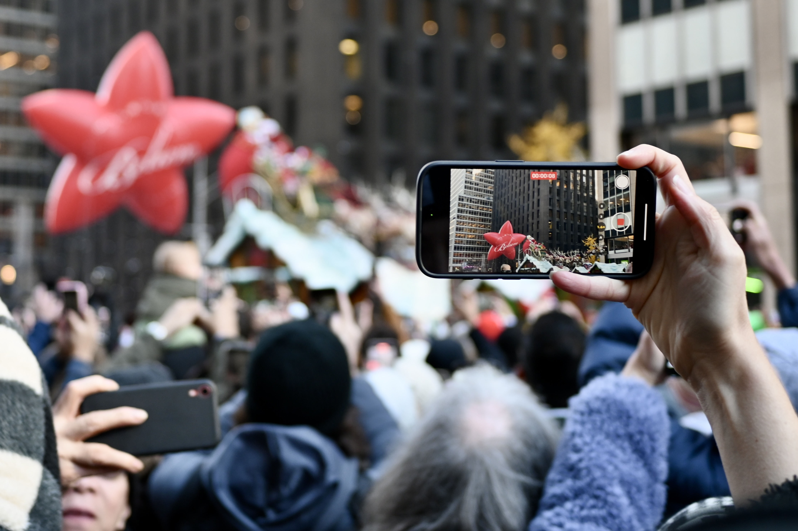

photographs
photos by maeve regan

- camera: nikon fm
- lens: nikkor 50mm 1:1.4
- film: kodak gold
- iso: 200
- location: reykjavik, iceland
- year: 2023
- lab: catlabs
- description: viti

- camera: nikon fm
- lens: nikkor 50mm 1:1.4
- film: catlabs xfilm pro
- iso: 320
- location: boston, massachusetts, united states
- year: 2023
- lab: catlabs
- description: chinatown
https://github.com/maeveregan/lumiaeve/blob/main/DSC_4075.JPG

- camera: nikon zfc
- lens: nikkor 42mm
- iso: 400
- aperture: f/2.8
- shutter speed: 1/200
- location: manhattan, new york city, united states
- year: 2023
- description: macys